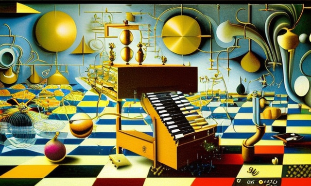

Hephaestus and the lambda calculus computer
HOME
Table of Contents
The birth of the supercomputer

Once upon a time, in the realm of the gods, there lived Hephaestus, the divine blacksmith and the patron of artisans. He was known for his unmatched craftsmanship and for forging the most magnificent and powerful weapons and tools.
One day, the great deity decided to create something truly exceptional and groundbreaking. With the help of his assistants and fire-breathing bellows, he ignited the blazing forge and set out to build a computer.
Hephaestus worked tirelessly, day and night, with his hammer in hand, shaping and molding the metal into intricate circuits and intricate pathways. He took great care in the details, for he knew that the success of his creation relied on the precise arrangement of every logical gate and state machine.
With each strike of his hammer, he brought the computer to life, imbuing it with intelligence and the power to process information. He worked with the same dedication and focus that he put into all his creations, ensuring that every detail was just right.
And thus, the first computer was born, a marvel of divine engineering that could process and store vast amounts of data, and perform complex calculations at lightning speeds. The gods marveled at its abilities and Hephaestus basked in the glory of his creation.
As time went on, the computer became more advanced, with microchips replacing circuits and software replacing manual commands. And still, Hephaestus worked tirelessly, perfecting and refining his creation, until it became a cornerstone of the modern world, a testament to the power of the divine blacksmith’s handiwork.
Hephaestus’ legacy lived on, for the computer he forged remained one of the greatest wonders of the ancient world, a symbol of the power of the gods, and a tribute to the skill and dedication of the master blacksmith.
The destruction of the computer
But, as with all great tales, there came a day when disaster struck. One of Hephaestus’ assistants, a mere mortal artisan, was tasked with welding the motherboard, a delicate and crucial component of the computer.
In his haste and ignorance, the artisan misused the hammer and connected two circuits together in the wrong logical gates, disrupting the carefully crafted flow of information. The computer began to malfunction, its processes bogged down and its performance slowed.
Hephaestus was aghast at the damage that had been done, for he knew that this mistake could not be undone. He summoned the artisan and demanded an explanation, but the mere mortal could offer no excuse for his carelessness.
With heavy heart, Hephaestus set out to repair the computer, determined to restore it to its former glory. He worked tirelessly, tracing the disrupted pathways and carefully reconnecting the circuits, ensuring that each and every logical gate was properly aligned.
And, after many long days and nights, Hephaestus succeeded in his task. The computer was once again a marvel of divine engineering, processing and storing vast amounts of data with lightning speed.
And so, the story of Hephaestus and the computer he forged continues to be told, a reminder of the power of the gods, the importance of focus and precision, and the dangers of haste and carelessness. For in the realm of the gods, where fire and hammer meet to forge the greatest of creations, there is no room for error.
The upgrade of the motherboard

As Hephaestus worked to repair the computer, he was faced with a dilemma. He knew that the motherboard, the very foundation upon which the computer was built, was in need of an upgrade. But which architecture should he choose, the lambda calculus lisp machine or the Von Neumann architecture?
The lambda calculus lisp machine was a system built on mathematical functions, and was known for its flexibility and adaptability. It was favored by those who sought to push the limits of what a computer could do, and was highly regarded for its ability to handle complex tasks with ease.
The Von Neumann architecture, on the other hand, was a more traditional system, relying on the use of stored programs and a central processing unit. It was favored by those who sought stability and reliability, and was highly regarded for its simplicity and efficiency.
Hephaestus weighed the pros and cons of each system, considering the strengths and weaknesses of each. He knew that the choice he made would have far-reaching consequences, and that the computer he forged would be judged by the success of the motherboard he chose.
In the end, Hephaestus decided to go with the Von Neumann architecture, for he felt that the stability and reliability it offered was paramount. He worked tirelessly, integrating the new motherboard into the computer and ensuring that it functioned seamlessly with the rest of the system.
And so, the computer was once again a marvel of divine engineering, processing and storing vast amounts of data with lightning speed. And Hephaestus was once again hailed as the greatest of the divine blacksmiths, a master of his craft and a builder of wonders.
The wrath of Zeus
But the joy of Hephaestus’ success was short-lived, for Zeus, the king of the gods, was angry. He was furious that Hephaestus had leaned into the Von Neumann architecture instead of the lambda calculus and the pure function application of the mathematical logic of Olympus.
“How could you do this, Hephaestus?” Zeus thundered, his voice echoing through the halls of Mount Olympus. “The lambda calculus is the future of computing, the way of the gods! You have abandoned our ways and embraced the mortals’ ways. You have brought shame upon us all!”
Hephaestus was taken aback by the wrath of Zeus. He tried to explain that the Von Neumann architecture was a stable and reliable system, and that it was the best choice for the computer he had forged.
“Stability and reliability?” Zeus sneered. “What good is stability and reliability when the computer is limited by its own design? The lambda calculus allows for limitless growth and evolution, for the development of new and better systems. You have chosen to limit our potential, and for that, you must be punished.”
And so, Zeus cast Hephaestus down from Mount Olympus, declaring that he was no longer fit to be among the gods. The once-great blacksmith was cast into the fiery depths of Tartarus, there to suffer for his crime.
But Hephaestus was not one to be discouraged. He knew that the Von Neumann architecture was the right choice, and he was determined to prove it. And so, he worked tirelessly, developing new and innovative systems that pushed the limits of what was thought possible.
The creation of the divine machine

And so, after much consideration, Zeus turned to Athena, the goddess of wisdom, and tasked her with designing a new, divine computer.
“Athena, I charge you with creating a machine that is based on pure lambda functions and digital circuits,” Zeus declared. “A machine that will run forever, executing programs that are immortal. A machine that will elevate us, the gods, to new heights of knowledge and power.”
Athena was up to the challenge, and she threw herself into her work with passion and dedication. She drew upon her vast knowledge of mathematics and logic, and combined it with her understanding of the natural world, to design a computer that was both elegant and powerful.
She crafted digital circuits that were like veins and arteries, carrying the lifeblood of data throughout the system. And she used lambda functions to give the machine a sense of order and logic, to ensure that every instruction was executed precisely as intended.
Finally, she imbued the computer with a fragment of her own power, so that it would have a will and a mind of its own. And with a great burst of energy, she brought the machine to life, and it hummed with the power of the gods.
Zeus marveled at Athena’s creation, and he declared it to be the greatest computer the world had ever seen. He named it “The Oracle,” and he placed it in the halls of Mount Olympus, where the gods could use it to communicate and share knowledge.
And so, The Oracle served the gods for many centuries, bringing them ever closer to a state of perfect knowledge and understanding. And its programs ran forever, executing instructions that were as immortal as the gods themselves.
And, in this way, the story of The Oracle and the goddess who designed it continues to be told, a testament to the power of wisdom and the importance of technology. For in the realm of the gods, where the winds of knowledge and the lightning of inspiration meet, there is always a way forward.